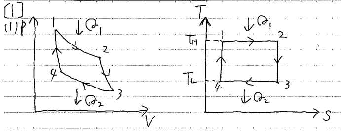

問題概要
2022年度の熱力学入試では、大問【1】でカルノーサイクル、大問【2】で熱力学関係式の導出（エンタルピー、ジュール・トムソン係数）が出題されました。熱力学の基礎概念と関係式の導出能力が問われる内容でした。
問題PDFをダウンロード (2022年度)大問【1】
(1) カルノーサイクルのp-V線図とT-S線図を説明せよ。
考え方のヒント
カルノーサイクルは、2つの等温過程と2つの可逆断熱過程から構成される理想的な熱機関のサイクルです。各過程の物理的意味と、p-V線図・T-S線図の特徴を押さえましょう。
途中式と解答
p-V (圧力-容積) 線図:
1→2: 等温膨張（温度\(T_H\)、熱\(Q_1\)吸収）
2→3: 断熱膨張（\(T_H\)→\(T_L\)）
3→4: 等温圧縮（温度\(T_L\)、熱\(Q_2\)放出）
4→1: 断熱圧縮（\(T_L\)→\(T_H\)）
1→2: 等温膨張（温度\(T_H\)、熱\(Q_1\)吸収）
2→3: 断熱膨張（\(T_H\)→\(T_L\)）
3→4: 等温圧縮（温度\(T_L\)、熱\(Q_2\)放出）
4→1: 断熱圧縮（\(T_L\)→\(T_H\)）

図1：カルノーサイクルのp-V線図
T-S (温度-エントロピー) 線図:
1→2: 等温膨張（\(T_H\)一定、\(S_1\)→\(S_2\)）
2→3: 断熱膨張（\(S_2=S_3\)、\(T_H\)→\(T_L\)）
3→4: 等温圧縮（\(T_L\)一定、\(S_3\)→\(S_4\)）
4→1: 断熱圧縮（\(S_4=S_1\)、\(T_L\)→\(T_H\)）
1→2: 等温膨張（\(T_H\)一定、\(S_1\)→\(S_2\)）
2→3: 断熱膨張（\(S_2=S_3\)、\(T_H\)→\(T_L\)）
3→4: 等温圧縮（\(T_L\)一定、\(S_3\)→\(S_4\)）
4→1: 断熱圧縮（\(S_4=S_1\)、\(T_L\)→\(T_H\)）
図2：カルノーサイクルのT-S線図
(2) カルノーサイクルにおける熱量 \(Q_1\)（吸収）と \(Q_2\)（放出）を求めよ。
考え方のヒント
等温変化では内部エネルギーが変化しないため、供給・放出される熱量は外部への仕事と等しくなります。理想気体の状態方程式を使いましょう。
途中式と解答
供給熱量 \(Q_1\)（1→2: 等温膨張）:
$$Q_1 = \int_{V_1}^{V_2} p dV = \int_{V_1}^{V_2} \frac{mRT_H}{V} dV = mRT_H \ln\left(\frac{V_2}{V_1}\right)$$
$$Q_1 = \int_{V_1}^{V_2} p dV = \int_{V_1}^{V_2} \frac{mRT_H}{V} dV = mRT_H \ln\left(\frac{V_2}{V_1}\right)$$
放出熱量 \(Q_2\)（3→4: 等温圧縮）:
$$Q_2 = mRT_L \ln\left(\frac{V_3}{V_4}\right)$$
$$Q_2 = mRT_L \ln\left(\frac{V_3}{V_4}\right)$$
(3) 各過程におけるエントロピー変化を求めよ。
考え方のヒント
等温過程ではエントロピー変化は熱量/温度で計算できます。断熱過程ではエントロピーは一定です。
途中式と解答
1→2（等温膨張）: $$\Delta S_{12} = \frac{Q_1}{T_H} = mR \ln\left(\frac{V_2}{V_1}\right)$$
2→3（断熱膨張）: $$\Delta S_{23} = 0$$
3→4（等温圧縮）: $$\Delta S_{34} = -\frac{Q_2}{T_L} = -mR \ln\left(\frac{V_3}{V_4}\right)$$
断熱過程の関係より \(\frac{V_2}{V_1} = \frac{V_3}{V_4}\) なので、\(\Delta S_{34} = -mR \ln\left(\frac{V_2}{V_1}\right)\) となる。
断熱過程の関係より \(\frac{V_2}{V_1} = \frac{V_3}{V_4}\) なので、\(\Delta S_{34} = -mR \ln\left(\frac{V_2}{V_1}\right)\) となる。
4→1（断熱圧縮）: $$\Delta S_{41} = 0$$
(4) サイクルの熱効率を求めよ。
考え方のヒント
熱効率は正味の仕事を供給熱量で割った値です。断熱過程の関係式を使って\(Q_2/Q_1\)を温度比で表しましょう。
途中式と解答
$$\eta = \frac{Q_1 - Q_2}{Q_1} = 1 - \frac{Q_2}{Q_1}$$
断熱過程の関係より \(\frac{V_2}{V_1} = \frac{V_3}{V_4}\) となるため、\(Q_1/T_H = Q_2/T_L\) (エントロピー変化が等しい) より \(\frac{Q_2}{Q_1} = \frac{T_L}{T_H}\)
よって、$$\eta = 1 - \frac{T_L}{T_H}$$
例えば \(T_H=1200\,\mathrm{K}\), \(T_L=600\,\mathrm{K}\) のとき、$$\eta = 1 - 0.5 = 0.5$$ 答え: 熱効率は \(1 - \frac{T_L}{T_H}\)
断熱過程の関係より \(\frac{V_2}{V_1} = \frac{V_3}{V_4}\) となるため、\(Q_1/T_H = Q_2/T_L\) (エントロピー変化が等しい) より \(\frac{Q_2}{Q_1} = \frac{T_L}{T_H}\)
よって、$$\eta = 1 - \frac{T_L}{T_H}$$
例えば \(T_H=1200\,\mathrm{K}\), \(T_L=600\,\mathrm{K}\) のとき、$$\eta = 1 - 0.5 = 0.5$$ 答え: 熱効率は \(1 - \frac{T_L}{T_H}\)
全体のポイント
- カルノーサイクルは熱機関の理想モデルで、最大効率を示す
- 等温・断熱過程の物理的意味を理解することが重要
- エントロピーや熱効率の計算は公式を活用
受験熱力学のチップス
- p-V線図・T-S線図の特徴を押さえる
- 理想気体の状態方程式やエントロピー公式を使いこなす
- 効率は温度比だけで決まることを覚えておく